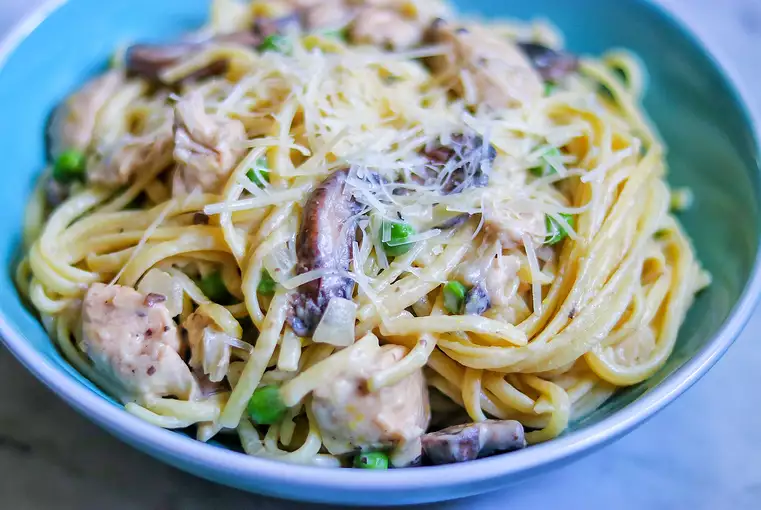

Cheesy Lemon-Chicken Pasta

Description
Pecorino Romano and Parmesan give cheesy flavor to this easy
lemon-chicken pasta dish that's sure to please the whole family!
Ingredients
- package linguine pasta
- cup frozen peas
- tablespoons butter
- olive oil
- button mushrooms, sliced
- cup diced onion
- skinless, boneless chicken breasts, cut into 1-inch chunks
- salt and ground black pepper to taste
- cream cheese, cubed and softened
- fresh lemon juice
- lemon zest
- Parmesan cheese
- Pecorino Romano cheese
- flat-leaf (Italian) parsley
Steps
Step 1
Step 2
Step 3
Step 4